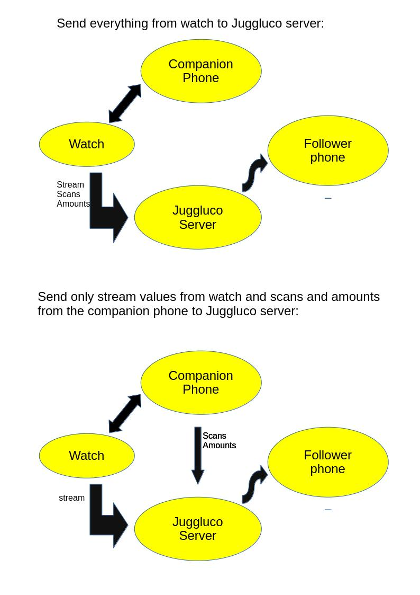
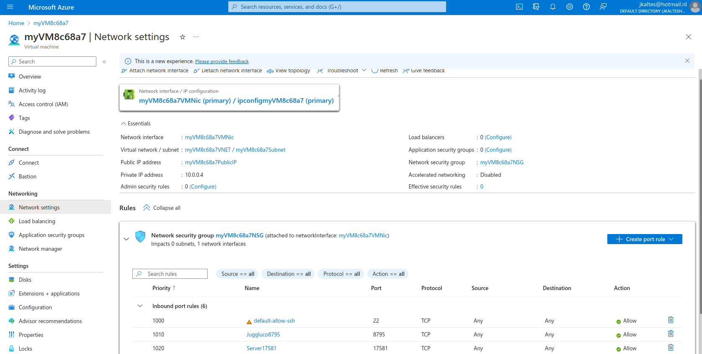
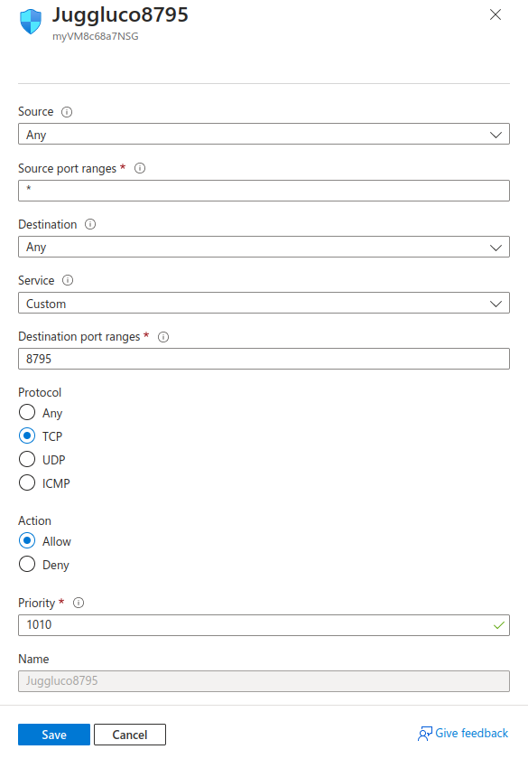
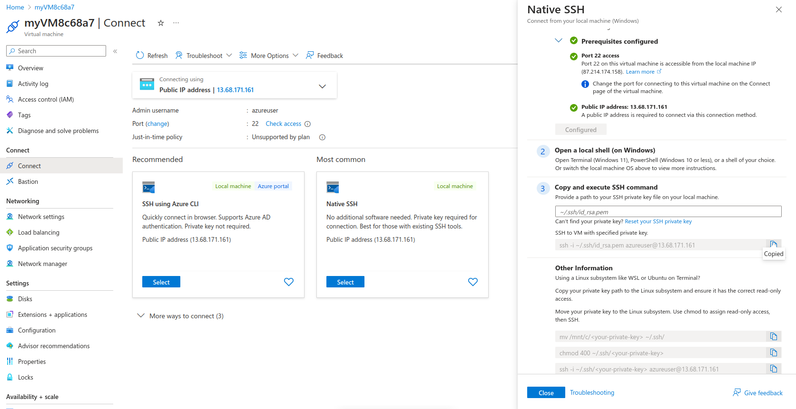
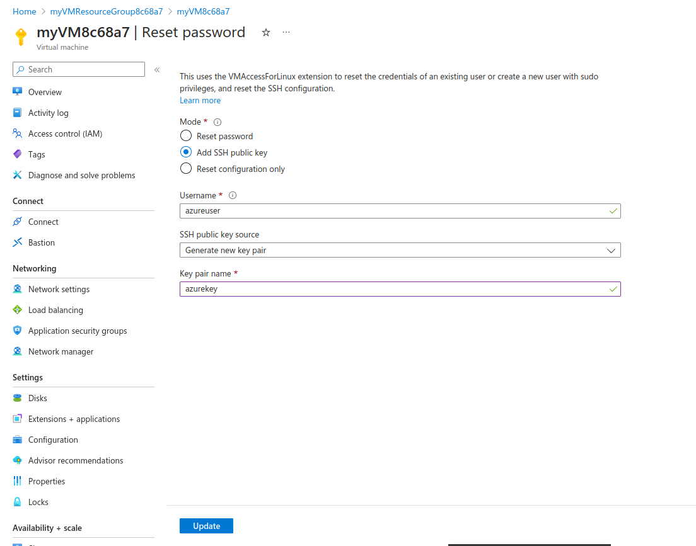
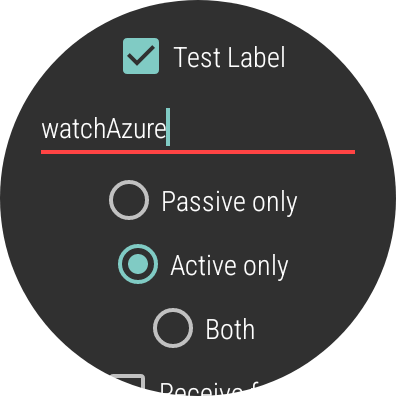
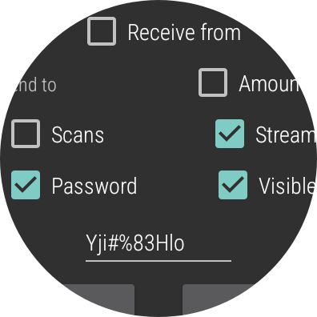
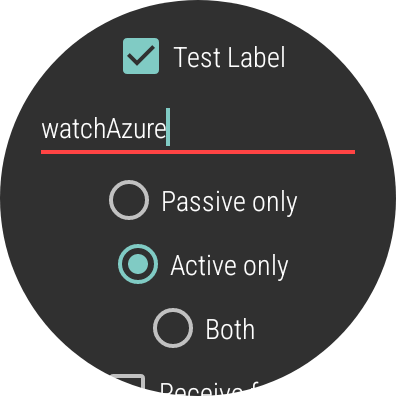
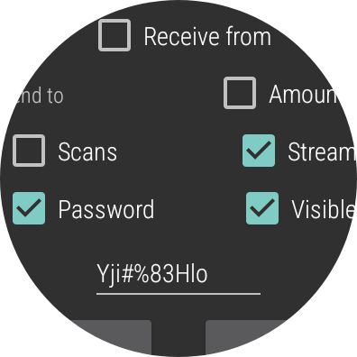
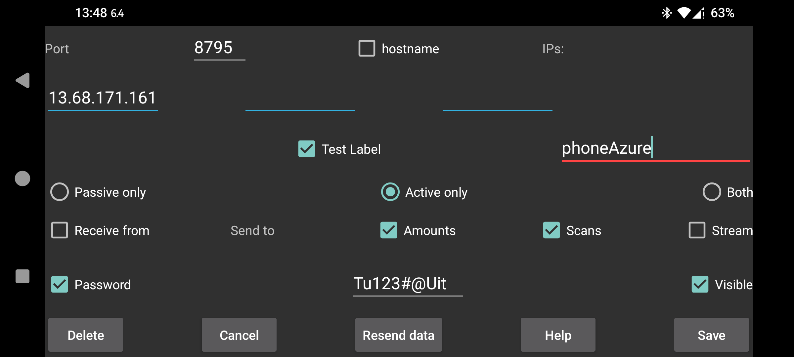

If you have a WearOS watch in which you can put an esim, it can sometimes make sense to directly connect the watch to Juggluco server. In this way someone can follow the glucose values of someone who does not carry a phone. The disadvantage is that the watch battery will be empty in less time. Also to have a good view on your glucose curve, you can better look at the larger phone screen.
The best way to make such a connection is to first setup the watch in the usual way as described here: https://www.juggluco.nl/JugglucoWearOS/install/manual.html
The connection created in this manner you don’t modify. This connections are meant to communicate with the companion phone of the watch, is automatically created and switches to Bluetooth when WIFI doesn’t work. This is will not work for a phone connected over the internet via a mobile data connection. The follower phone has to be a separate phone that is not the companion phone of the watch. Scanning of the sensor happens with the companion phone, the follower phone only follows the glucose values and amounts of insulin etc.
We will create the second of following possible configurations:
In most cases the watch and follower phone can’t be connected directly with each other when both are connected via mobile data. There has to be a go between to which each connects. There are two possibilities:
Keep an Android device at home and forward a port from the modem to that device. See https://www.juggluco.nl/Juggluco/phones
Run Juggluco server on a computer connected to the internet and forward a port to that computer.
Here I will describe how to use the last possibility. At https://www.juggluco.nl/Juggluco/cmdline it was already described how to connect two phones this way. Something analogous you can do to connect directly from the watch to the internet.
Here I will illustrate it with a server hosted at Azure, but it can also be done on other computing clouds.
If you have a non-prepaid credit card, you can start for free at Azure. If you don’t upgrade in four weeks, it is turned off. There you have to create and start a virtual machine, analogous at the way I described for AWS.
To connect over the internet to the virtual machine, you need to forward an external port to an internal port.
After pressing on the virtual machine, you press on “Network settings”. Normally there is already a port 22 rule for ssh and you have to create the same kind of rule for other ports.
To do this press on “Create port rule”→”Inbound rule”. To connect to port 8795, we give for “Destination port ranges”, 8795, and as Protocol TCP. (In a similar way you can add an extra port for the Nightscout server in Juggluco and one for port 80 to verify a domain name.)
 To connect via ssh to the machine, you need to create a key: select the virtual machine and press there on Connect. There after select “Native SSH”. Then press on “Reset your SSH private key”. After you have saved the generated key to “azurekey.pem” and specified as username azureuser you can use that file to login with SSH:
ssh -i azurekey.pem azureuser@IP
Here IP stands for the public IP address of the virtual machine and is shown under Native SSH in Azure’s portal.
You can copy something from your local computer to the virtual machine with scp for example:
scp -i azurekey.pem afile azureuser@IP:/tmp
to copy the local file afile to /tmp in the virtual machine.
 After login in your virtual host, you can put Juggluco server on it with:
curl https://www.juggluco.nl/Juggluco/cmdline/download/juggluco7.6.1-dyn.xz --output juggluco.xz unxz juggluco.xz chmod a+x juggluco
Now we have to create connections.
To configure Juggluco server to receive input from Juggluco on the watch, we do the following:
./juggluco -r -P -i -L watchAzure -w Yji#%83Hlo
Which means the following (see ./juggluco -h):
-r: receive
-P: passive only
-i: don’t test on the IP
-L watchAzure: use as label watchAzure
-w Yji#%83Hlo: encrypt with password Yji#%83Hlo
On the watch we have to create the other side of the connection.
Port: 8795
IPs: Public IP of virtual machine
Test Label: watchAzure
(*) Active only
[x] Stream
[x] Password Yji#%83Hlo
 



You could also check Amounts and Scan. Another possibility is to send Stream and Amounts directly from the companion phone to use less of the battery of the watch. You should always also send Scans, Amounts you can be left out.
The following configures to receive the Scans and Amounts from the companion phone
./juggluco -r -P -i -L phoneAzure -w Tu123#@Uit
The only difference from the above is the label and the password.
Settings companion phone:
The following configures to send to the follower phone:
./juggluco -n -s -b -P -i -LazurePhone -w Flop#%56Qua
Which has the following meaning:
-n: send numbers (Amounts)
-s: send scans
-b: send Stream (bluetooth)
-P: Passive only
-i: don’t test on IP
-LazurePhone: use as label azurePhone
-w Flop#%56Qua: encrypt with password Flop#%56Qua
On the follower phone we make the following configuration:

./juggluco -l
now returns:
Saving in directory jugglucodata
Mirror port 8795
unit: mg/dL
connections:
1: phoneAzure don't test IP, receiver passiveonly Tu123#@Uit
2: watchAzure don't test IP, receiver passiveonly Yji#%83Hlo
3: azurePhone don't test IP, passiveonly Flop#%56Qua, send nums scans stream
As described in https://www.juggluco.nl/Juggluco/cmdline you can for example start the server by creating the following script in the file repeat.sh:
while true do echo -n "Start new Juggluco Server: " date ./juggluco doneand run it with:
nohup bash ./repeat.sh &When you make a change in the configuration, you need to kill and start ./juggluco.